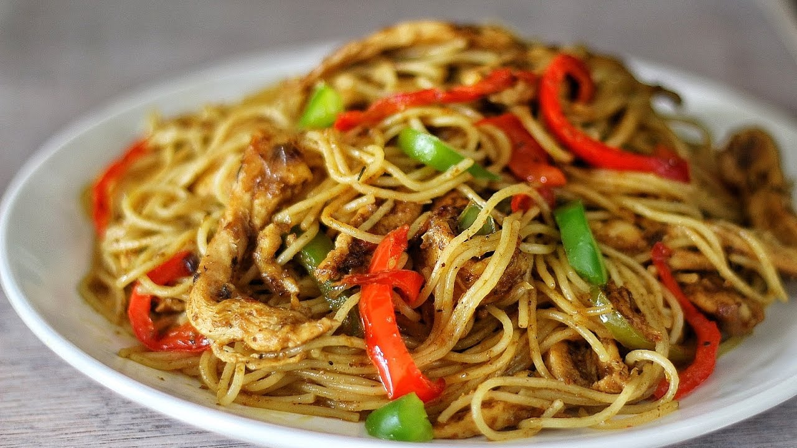
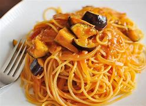
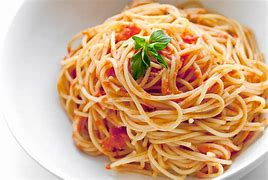
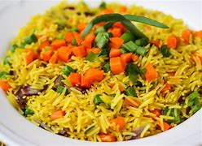
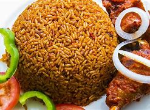

Stir-fry Spaghetti Recipe
I tried out this dish on a day i felt like making something more out of the regular spaghetti with sauce. I decided i was going to make something sumptous after seeing a picture online. Since it does not hurt to try out new dishes i felt why not, and lucky me, i just so happen to have some of the ingredients available at hand so yayy!!. And that is how a new favourite meal was birthed!
| Ingredients | Measurements |
|---|---|
| Spaghetti | 1/2 pack |
| Vegetable oil | 4 tablespoon |
| Red bell pepper | 2 |
| Green bell pepper | 1 |
| Onion | 1 medium-size |
| Garlic and Ginger | 1 small-sized |
| Carrot | 1 big-size |
| Prawns | as desired |
| Thyme | 1/2 teaspoon |
| Curry powder | 1 teaspoon |
| Salt | as desired |
| Seasoning cubes | as desired |
How to prepare:
Preparation time: 20mins
- Boil the spaghetti with water and a spoonful of oil in a pot for 10mins (not fully cooked), drain and set aside.
- Dice the red and green bell pepper, onion, garlic, ginger and carrot separately.
- Pour 4 tablespoon of vegetable oil in a pan, fry the prawns.
- Add the diced onion, carrot and bell peppers, stir for 3 minutes.
- Then add the diced garlic and ginger, thyme, curry powder, salt and seasoning cubes to desired taste.
- Add in the boiled spaghetti, mix well and heat for a few minutes.
- The dish is ready. Serve and Enjoy!
You may also prefer



